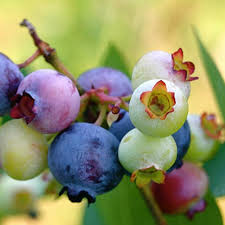

Snozzberries

How to Make a Snozzberry
The snozzberry is a rare and enchanting fruit that grows only in the most magical corners of the Chocolate Factory. The berries are small, resembling a cross between a raspberry and a blueberry, but with a unique iridescent shimmer that changes color as the light dances upon them.
Ingredients
Below you will find everything needed to make your own Snozzberry.
- Blue magicberries
- Stardust seeds
- Water
- Nectar elixir
- Food-grade essential oils (for intense flavors)
- Citrus zest whispers
Directions
- Prepare Ingredients:
- Measure all the ingredients and have them ready before you start.
- Prepare the Blue Magicberries:
- Gently mix blueberries and blackberries to create an otherworldly blend.
- Sprinkle edible glitter over the berries for a magical shimmer.
- Create Stardust Seeds:
- Mix tiny star-shaped sprinkles or edible seeds into the berry blend for a surprise crunch.
- Craft the Nectar Elixir:
- In a small bowl, combine honey or agave syrup, passion fruit juice, and a hint of vanilla extract to create a sweet, tropical elixir.
- Infuse with Citrus Zest Whispers:
- Add finely grated zest from an orange and a lemon to the nectar elixir for a burst of citrus freshness.
- Assemble the Fantasy Concoction:
- Gently coat the Blue Magicberries with the Nectar Elixir, allowing them to soak up the enchanting flavors.
- Sprinkle Stardust Seeds over the coated berries for an extra touch of magic.